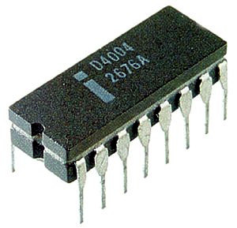
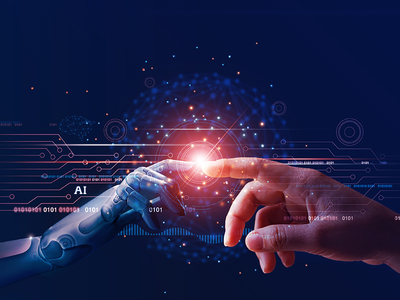

A História da Informática
A história da informática é um campo vasto e fascinante que abrange desde os primeiros dispositivos mecânicos de cálculo até os modernos computadores e sistemas digitais. A evolução da computação é marcada por diversas inovações e avanços tecnológicos que revolucionaram a maneira como interagimos com a informação.
Os Primórdios da Computação
A história da informática leva-nos até os tempos antigos, quando dispositivos como o ábaco eram utilizados para realizar cálculos matemáticos. No século XVII, matemáticos como Blaise Pascal e Gottfried Wilhelm Leibniz desenvolveram máquinas mecânicas para automatizar cálculos aritméticos, como a Pascalina e a máquina de Leibniz.
O Surgimento dos Computadores Mecânicos
No século XIX, Charles Babbage projetou a "Máquina Analítica", um dispositivo mecânico programável considerado um precursor dos computadores modernos. Ada Lovelace, colaboradora de Babbage, desenvolveu algoritmos para essa máquina, sendo reconhecida como a primeira programadora da história.
A Era dos Computadores Eletrónicos
Durante a Segunda Guerra Mundial, houve um avanço significativo na computação eletrónica. O Colossus, construído pelos britânicos, foi um dos primeiros computadores eletrônicos usados para decifrar códigos alemães. Nos Estados Unidos, o ENIAC (Electronic Numerical Integrator and Computer) foi um marco na computação, sendo o primeiro computador eletrónico de propósito geral.

A Revolução dos Computadores Pessoais
Na década de 1970, a invenção do microprocessador permitiu a criação de computadores pessoais acessíveis ao público em geral. Empresas como Apple, IBM e Microsoft popularizaram o uso de computadores para fins comerciais e domésticos, transformando o setor da informática.
Intel 4004 é uma Unidade Central de Processamento com 4-bits. Fabricado pela Intel Corporation em 1971, foi o primeiro microprocessador comercialmente disponível pela Intel em um chip simples, assim como o primeiro disponível comercialmente.
A Era da Internet e da Computação em Nuvem
Com o advento da internet na década de 1990, a computação passou a desempenhar um papel fundamental na comunicação global e na disseminação de informação. No século XXI, a computação em nuvem revolucionou a forma como armazenamos e processamos dados, permitindo serviços acessíveis remotamente.
Imagem gerala por IA.
Conclusão
A história da informática é uma trajetória de inovações e avanços tecnológicos que transformaram radicalmente a sociedade. Desde as primeiras máquinas mecânicas até os avanços da inteligência artificial e da computação quântica, a informática continua a evoluir e impactar o mundo de maneiras inimagináveis.
